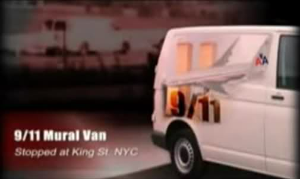

Le le vol 11 de American Airlines parti de Boston (Massachusetts) est détourné.
A et , 2 avions vont s'écraser sur les tours du WTC, qui s'effrondreront par la suite.
, après d'incendies, la tour WTC 7 s'effondre.
Ce même jour, un fourgon en route pour Manhattan est arrêté par la police de New York sur King Street, entre la 6ème et la 7ème avenue, parce qu'il porte sur son côté une peinture représentant un avion volant à côté des tours. Sur la peinture, un texte en hébreu. Les 2 occupants du véhicules tentent apparemment de s'enfuir, mais sont rattrapés et maîtrisés.
Robert Sanford, un radio-amateur alias WB6NYC coordinateur de l'ARES diffuse un enregistrement des échanges radio de la police Sanford, Robert: Bay Area Scanner Recordings < "Mysterious NYPD Transmission Points to a Wider 9/11 Conspiracy" à cette occasion :

Par la suite circule sur le net l'image supposée de ce fourgon, qui se révèle être en fait tirée du documentaire Core of Corruption, censé reconstituer l'incident.
Le terme d'avion téléguidé
dans le bande est cohérent avec une autre description de la peinture sur
le côté du van : un avion militaire (avec motif de camouflage), s'élevant depuis les tours. A côté un
slogan disant : Découvrez le plaisir de savoir piloter des avions téléguidés
, en hébreu. Le van
n'aurait donc été qu'un camion de livraison d'un magasin de jouets, comme le dit le rapport du MTI.
Cependant, la seule idée que des terroristes éviteraient de voyager dans un camion dépeignant leur attentat (dans une langue étrangère de surcroit) suffit à décrédibiliser la thèse d'un incident en relation avec l'attentat du 9 septembre.
De fait, le rapport du MTI "Saving City Lifelines: Lessons Learned in the 9-11 Terrorist Attacks", Mineta Transportation Institute (San José, Californie), février 2006, p. 20 indique :
Un fourgon avec la fresque d'un avion fonçant dans le World Trade Center fut arrêté près du poste de commandement temporaireNDT: De l'OEM. Il se révéla être loué à un groupe de gens originaires du moyen orien qui ne parlaient pas anglais. Craignant qu'il puisse s'agir d'un camion transportant une bombe, le Département de Police de New York évacua immédiatement la zone, appela le déminage, et retint les occupants jusqu'à ce qu'une recherche approfondie soit effectuée. Le véhicule se révéla être un camion de livraison innocent.